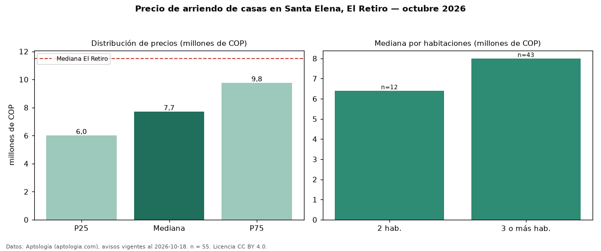

Precio de arriendo de casas en Santa Elena, El Retiro — octubre 2026
En Santa Elena, El Retiro, la mediana de canon mensual de casas es COP 7,70 millones, según 55 avisos vigentes. Eso es 33 % por debajo de la mediana de El Retiro para casas (COP 11,50 millones). Por metro cuadrado, la mediana es COP 38.095/m² al mes (n = 54 avisos con área), 6 % por debajo de El Retiro (COP 40.625/m²). Con el precio por m² de venta del mismo segmento (COP 7,50 millones/m²), la rentabilidad bruta implícita es 6,1 % anual (aproximación con medianas de ofertas distintas). El área mediana anunciada es 200 m². El segmento con más oferta es el de 3 o más habitaciones (43 avisos, mediana COP 8,00 millones); pasar de 2 habitaciones a 3 o más habitaciones cambia la mediana +25 %. El estrato más frecuente es 5 (84 % de los avisos con estrato). La mitad central de los avisos va de COP 6,00 millones a COP 9,75 millones (razón 1,6), una dispersión moderada. Datos: Aptología (aptologia.com), CC BY 4.0 — https://www.aptologia.com/arriendo/el-retiro/santa-elena. Archivos: PDF, CSV con las cifras y gráfica PNG.

| Avisos únicos | 55 |
|---|---|
| Percentil 25 | COP 6.000.000 |
| Mediana | COP 7.700.000 |
| Percentil 75 | COP 9.750.000 |
| Mediana por m² | COP 38.095 |
Fuente: avisos vigentes de portales inmobiliarios recopilados por Aptología, deduplicados (mínimo 30 avisos únicos por celda). Precios pedidos, no cerrados. Fecha: 2026-10-18.